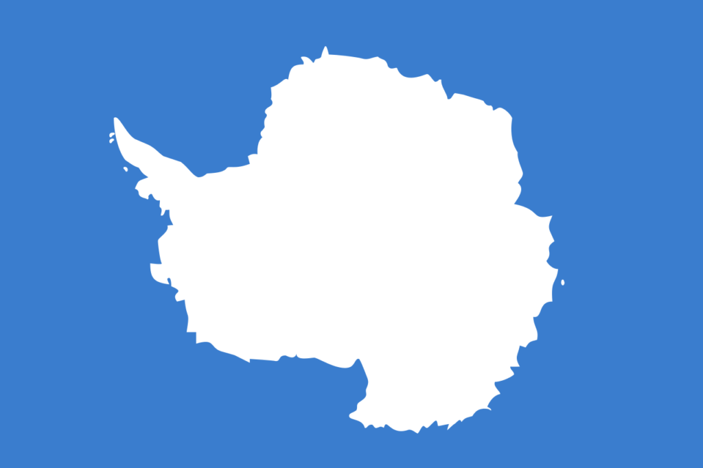

×

Antarctica
____
Климат
Это наиболее суровая область Земли с низкими температурами воздуха, сильными ветрами, снежными бурями и туманами. Восточная Антарктида - полюс холода Земли (-89,2 С на станции "Восток"), средние температуры зимних месяцев колеблются от -60 С до -70 С, летних - от -30 С до -50 С, на побережье зимой от -8 С до -35 С, летом 0-5 С. Часты очень сильные ветры. Материк и близлежащие острова имеют покровное оледенение. В прилегающих к Антарктиде районах шельфовых морей средние температуры самого теплого месяца +10 С, самого холодного - от 0 С до -10 С.
____